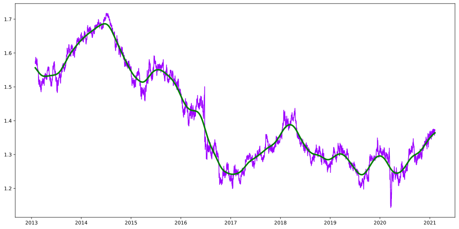
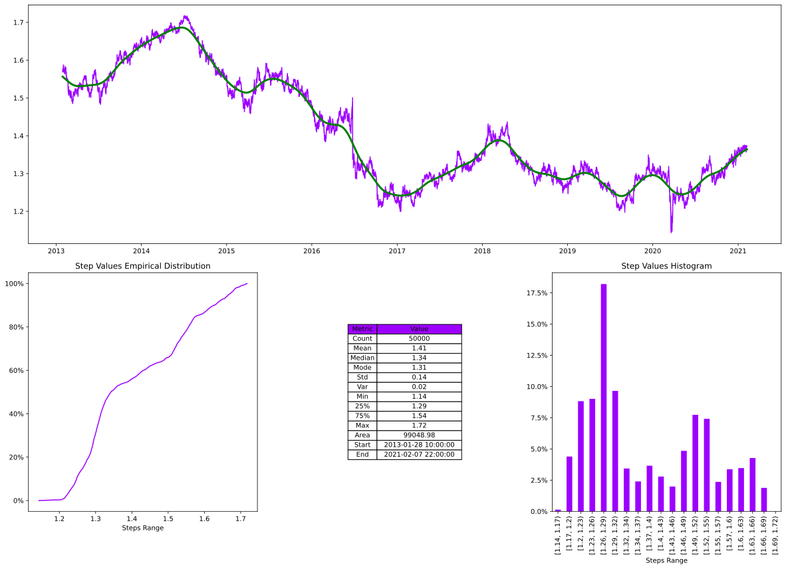
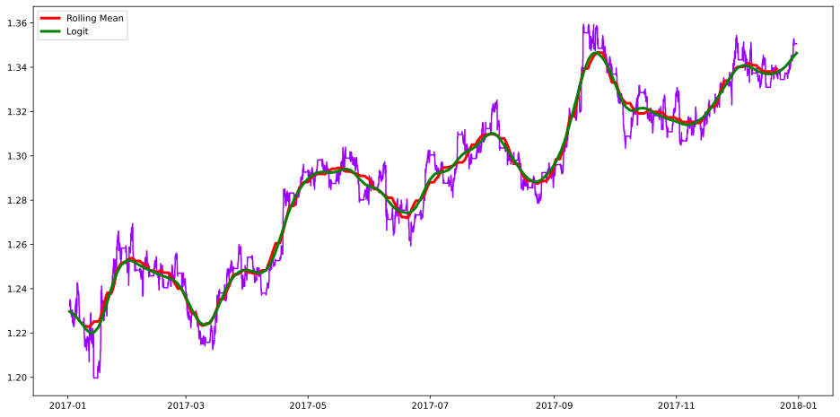
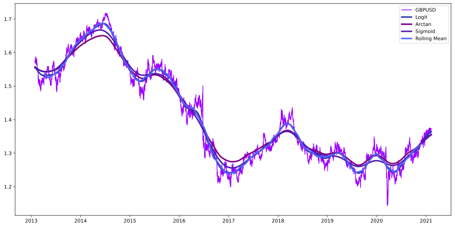
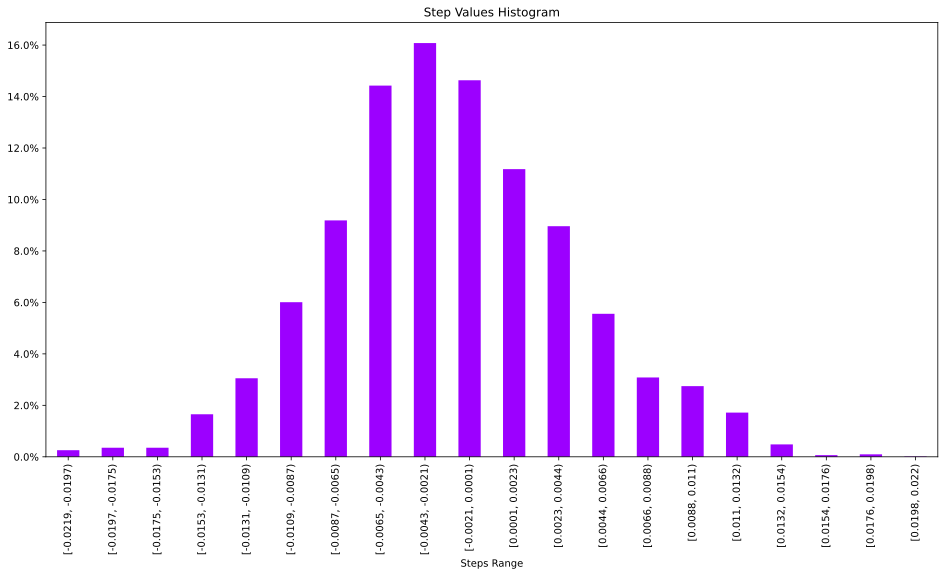
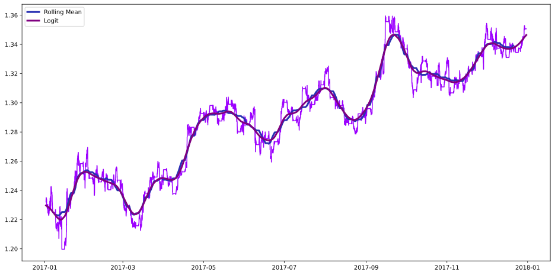
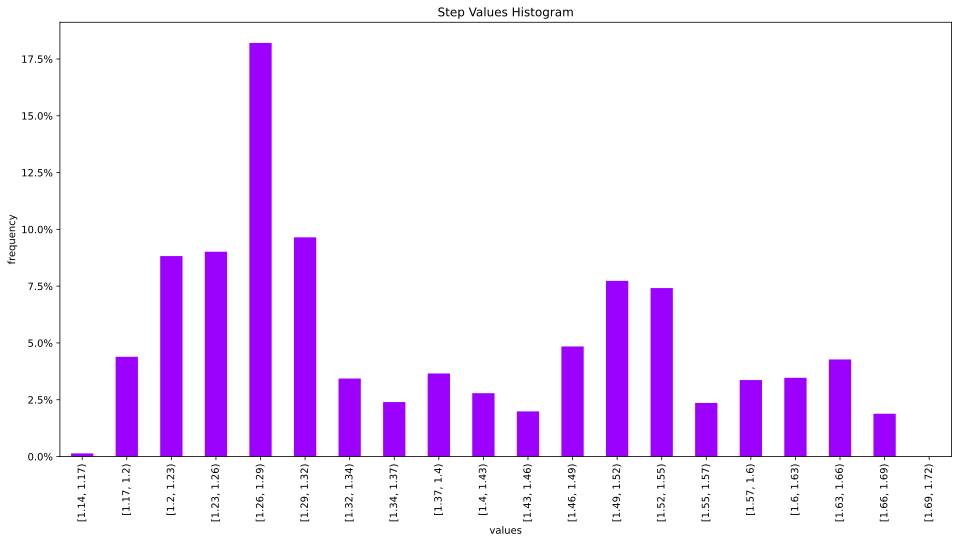
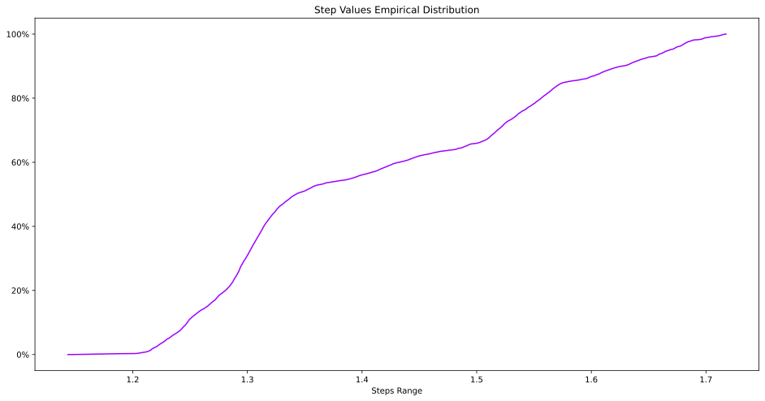
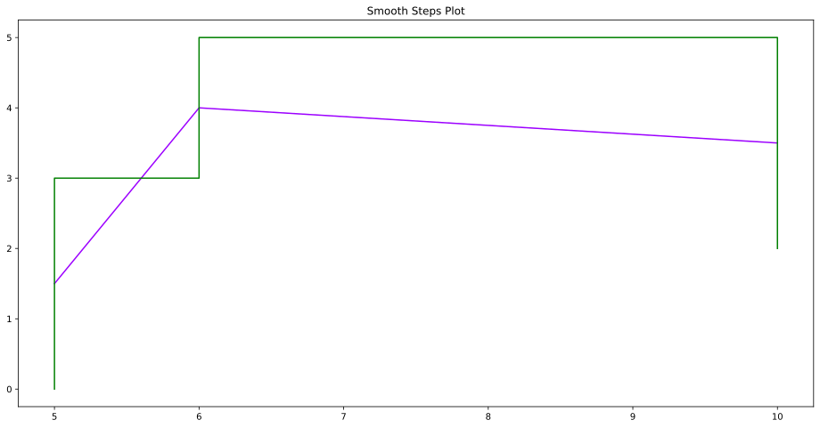

Forex Analysis¶
3
import sys
sys.path.insert(0, r"..//..//")
import matplotlib.pyplot as plt
import numpy as np
import pandas as pd
from hotstepper.basis import Bases
from hotstepper.basis import Basis
from hotstepper import Steps, Step
from hotstepper.utilities import rolling_window, prepare_datetime,get_epoch_start,get_epoch_end,float_to_date
import warnings
warnings.filterwarnings("ignore")
3
df_gbpusd_h1 = pd.read_csv(r'..//..//data//forex//GBPUSD_H1.csv',delimiter='\t',parse_dates=['Time'])
df_gbpusd_h1.head()
3
| Time | Open | High | Low | Close | Volume | |
|---|---|---|---|---|---|---|
| 0 | 2013-01-28 10:00:00 | 1.57474 | 1.57475 | 1.57243 | 1.57243 | 8337 |
| 1 | 2013-01-28 11:00:00 | 1.57245 | 1.57263 | 1.57050 | 1.57050 | 8119 |
| 2 | 2013-01-28 12:00:00 | 1.57049 | 1.57329 | 1.57049 | 1.57257 | 11026 |
| 3 | 2013-01-28 13:00:00 | 1.57256 | 1.57389 | 1.57102 | 1.57366 | 11717 |
| 4 | 2013-01-28 14:00:00 | 1.57366 | 1.57431 | 1.57133 | 1.57171 | 11911 |
4
gbpusd_h1_open_steps = Steps.read_dataframe(df_gbpusd_h1,start = 'Time',weight='Open',convert_delta=True)
ax = gbpusd_h1_open_steps.plot()
gbpusd_h1_open_steps.smooth_plot(ax=ax,color='g',linewidth=3)
4
<AxesSubplot:>

5
gbpusd_h1_open_steps.summary();

We can look more closely at how this pair moved differently between 2017 and 2018, we first create new steps for these date ranges and have a look at what we have.
6
gbpusd_h1_open_steps_2017 = gbpusd_h1_open_steps.clamp(lbound=pd.Timestamp(2016,12,31),ubound=pd.Timestamp(2017,12,31))
gbpusd_h1_open_steps_2018 = gbpusd_h1_open_steps.clamp(lbound=pd.Timestamp(2017,12,31),ubound=pd.Timestamp(2018,12,31))
(gbpusd_h1_open_steps_2018.integrate())/gbpusd_h1_open_steps_2017.integrate()
6
1.0365144559041144
7
ax = gbpusd_h1_open_steps.plot(label='GBPUSD')
gbpusd_h1_open_steps.smooth_plot(ax=ax,color='g',linewidth=3,label='Logit')
gbpusd_h1_open_steps.smooth_plot(ax=ax,color='r',linewidth=3,smooth_basis=Basis(Bases.arctan),label='Arctan')
gbpusd_h1_open_steps.smooth_plot(ax=ax,color='black',linewidth=3,smooth_basis=Basis(Bases.sigmoid),label='Sigmoid')
#and the rolling mean
gbpusd_h1_open_steps.plot_rolling_step(ax=ax,rolling_function=np.mean,window=2500,pre_mid_post='mid',color='blue',linewidth=3,label='Rolling Mean')
ax.legend()
7
<matplotlib.legend.Legend at 0x285f44db070>

From the plot of the logit, arctan, sigmoid and centred rolling mean of the data, we can see the logit basis plot is very similar to the centred rolling mean, with the advantage of not needing the warm-up at the start and tends to be less sensitive to extreme changes, leading to a smoother curve.
8
gbpusd_h1_open_steps_2017 = gbpusd_h1_open_steps.clip(pd.Timestamp(2017,1,1),pd.Timestamp(2017,12,31))
ax = gbpusd_h1_open_steps_2017.plot()
gbpusd_h1_open_steps_2017.plot_rolling_step(ax=ax,rolling_function=np.mean,window=300,pre_mid_post='mid',color='r',linewidth=3,label='Rolling Mean')
gbpusd_h1_open_steps_2017.smooth_plot(ax=ax,color='g',linewidth=3,label='Logit')
ax.legend()
8
<matplotlib.legend.Legend at 0x285f3104910>

9
fig, (ax,ax2) = plt.subplots(nrows=2,figsize=(24,6))
gbpusd_h1_open_steps_2017_smooth = gbpusd_h1_open_steps_2017.copy()
gbpusd_h1_open_steps_2017_smooth.rebase(Basis(Bases.logit))
gbpusd_h1_open_steps_2017_delta = gbpusd_h1_open_steps_2017 - gbpusd_h1_open_steps_2017_smooth
gbpusd_h1_open_steps_2017.plot(ax=ax)
gbpusd_h1_open_steps_2017_smooth.smooth_plot(ax=ax,color='g')
gbpusd_h1_open_steps_2017_delta.plot(ax=ax2)
9
<AxesSubplot:>

10
gbpusd_h1_open_steps_2017_delta.describe()
10
| Metric | Value | |
|---|---|---|
| 0 | Count | 6227 |
| 1 | Mean | 0 |
| 2 | Median | -0 |
| 3 | Mode | -0.02 |
| 4 | Std | 0.01 |
| 5 | Var | 0 |
| 6 | Min | -0.02 |
| 7 | 25% | -0 |
| 8 | 75% | 0 |
| 9 | Max | 0.02 |
| 10 | Area | 0.3 |
| 11 | Start | 2017-01-01 22:00:00 |
| 12 | End | 2017-12-31 00:00:00 |
11
gbpusd_h1_open_steps_2017_delta.histogram_plot(precision=4)
11
<AxesSubplot:title={'center':'Step Values Histogram'}, xlabel='Steps Range'>

12
gbpusd_h1_open_steps_2017_delta.pacf_plot(20,2)
12
<AxesSubplot:title={'center':'Steps Partial Autocorrelation for Lags = 20'}, xlabel='Lag'>

13
ax = gbpusd_h1_open_steps.histogram_plot(bins=20,xlabel='values',ylabel='frequency')

14
gbpusd_h1_open_steps.ecdf_plot()
14
<AxesSubplot:title={'center':'Step Values Empirical Distribution'}, xlabel='Steps Range'>

15
gbpusd_h1_open_steps_2017.pacf_plot(20,2)
15
<AxesSubplot:title={'center':'Steps Partial Autocorrelation for Lags = 20'}, xlabel='Lag'>

14
steps = Step(start=5,end=10, weight=3) + Step(start=6,weight=2)
ax = steps.smooth_plot(smooth_factor=0.1)
steps.plot(ax=ax,color='g')
ax.set_title('Smooth Steps Plot')
14
Text(0.5, 1.0, 'Smooth Steps Plot')
